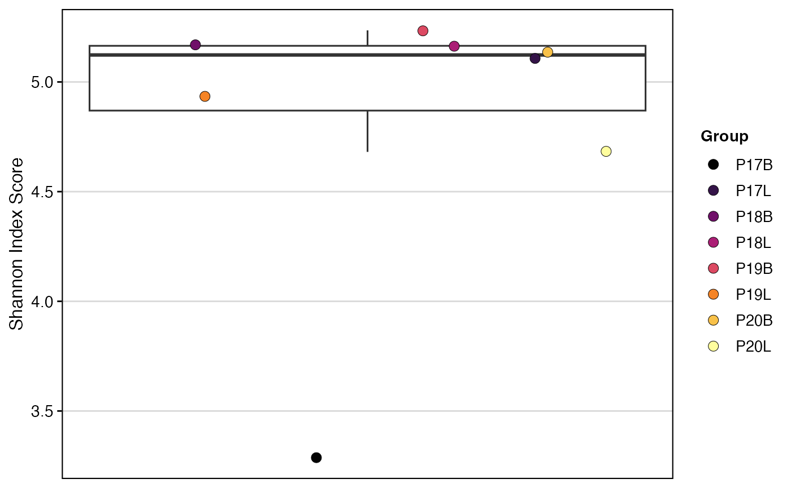
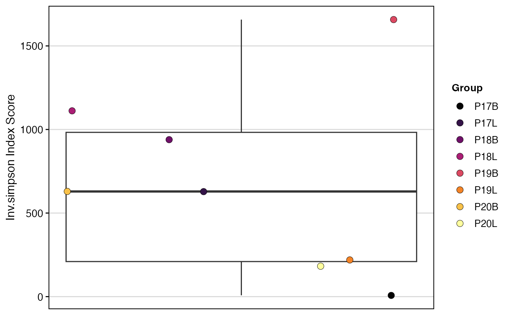

This function calculates a specified diversity metric for samples or groups within a dataset. To control for variations in library size, the function can perform bootstrapping with downsampling. It resamples each group to the size of the smallest group and calculates the diversity metric across multiple iterations, returning the mean value.
clonalDiversity(
input.data,
cloneCall = "strict",
metric = "shannon",
chain = "both",
group.by = NULL,
order.by = NULL,
x.axis = NULL,
exportTable = FALSE,
palette = "inferno",
n.boots = 100,
return.boots = FALSE,
skip.boots = FALSE,
...
)The product of combineTCR(),
combineBCR(), or combineExpression().
Defines the clonal sequence grouping. Accepted values
are: gene (VDJC genes), nt (CDR3 nucleotide sequence), aa (CDR3 amino
acid sequence), or strict (VDJC). A custom column header can also be used.
The diversity metric to calculate. Must be a single string from the list of available metrics (see Details).
The TCR/BCR chain to use. Use both to include both chains
(e.g., TRA/TRB). Accepted values: TRA, TRB, TRG, TRD, IGH, IGL
(for both light chains), both.
A column header in the metadata or lists to group the analysis
by (e.g., "sample", "treatment"). If NULL, data will be analyzed
by list element or active identity in the case of single-cell objects.
A character vector defining the desired order of elements
of the group.by variable. Alternatively, use alphanumeric to sort groups
automatically.
An additional metadata variable to group samples along the x-axis.
If TRUE, returns a data frame or matrix of the results
instead of a plot.
Colors to use in visualization - input any hcl.pals.
The number of bootstrap iterations to perform (default is 100).
If TRUE, returns all bootstrap values instead of the
mean. Automatically enables exportTable.
If TRUE, disables downsampling and bootstrapping. The
metric will be calculated on the full dataset for each group. Defaults to FALSE.
Additional arguments passed to the ggplot theme
A ggplot object visualizing the diversity metric, or a data.frame if
exportTable = TRUE.
The function operates by first splitting the dataset by the specified group.by
variable.
Downsampling and Bootstrapping: To make a fair comparison between groups of different sizes, diversity metrics often require normalization. This function implements this by downsampling.
It determines the number of clones in the smallest group.
For each group, it performs n.boots iterations (default = 100).
In each iteration, it randomly samples the clones (with replacement) down to the size of the smallest group.
It calculates the selected diversity metric on this downsampled set.
The final reported diversity value is the mean of the results from all bootstrap iterations.
This process can be disabled by setting skip.boots = TRUE.
Available Diversity Metrics (metric): The function uses a registry of metrics imported from the immApex package. You can select one of the following:
"shannon": Shannon's Entropy. See shannon_entropy.
"inv.simpson": Inverse Simpson Index. See inv_simpson.
"gini.simpson": Gini-Simpson Index. See gini_simpson.
"norm.entropy": Normalized Shannon Entropy. See norm_entropy.
"pielou": Pielou's Evenness (same as norm.entropy). See pielou_evenness.
"ace": Abundance-based Coverage Estimator. See ace_richness.
"chao1": Chao1 Richness Estimator. See chao1_richness.
"gini": Gini Coefficient for inequality. See gini_coef.
"d50": The number of top clones making up 50% of the library. See d50_dom.
"hill0", "hill1", "hill2": Hill numbers of order 0, 1, and 2. See hill_q.
# Making combined contig data
combined <- combineTCR(contig_list,
samples = c("P17B", "P17L", "P18B", "P18L",
"P19B","P19L", "P20B", "P20L"))
# Calculate Shannon diversity, grouped by sample
clonalDiversity(combined,
cloneCall = "gene",
metric = "shannon")

# Calculate Inverse Simpson without bootstrapping
clonalDiversity(combined,
cloneCall = "aa",
metric = "inv.simpson",
skip.boots = TRUE)
